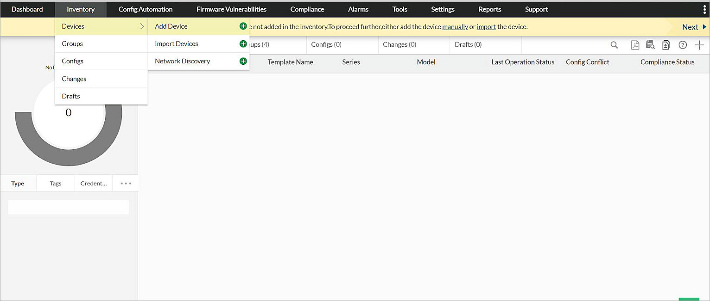
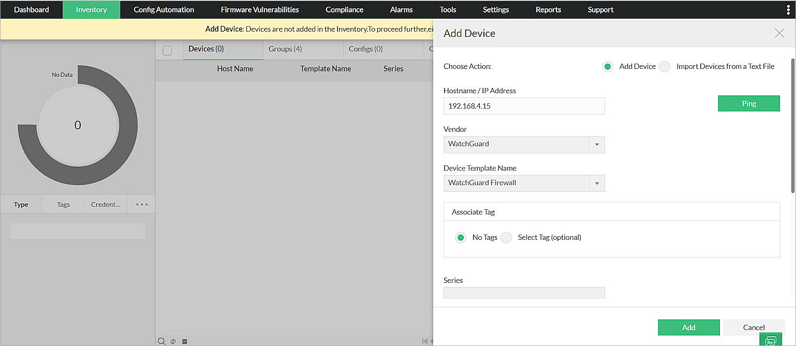
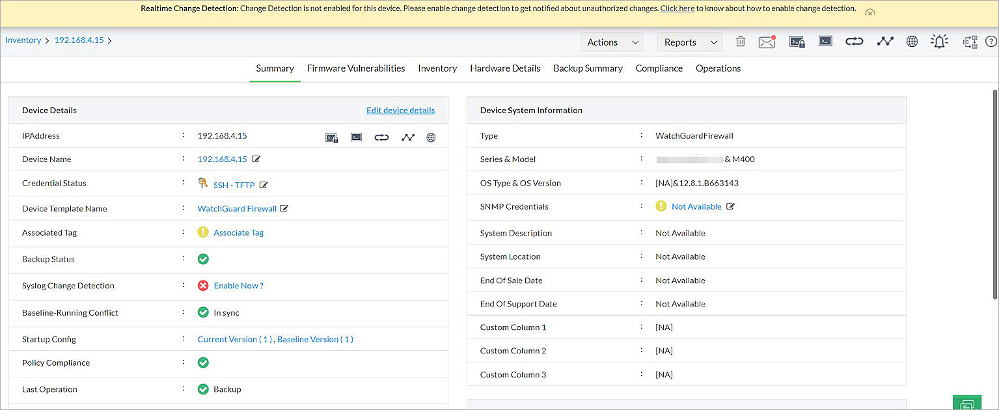

Network Configuration Manager is a web-based, network configuration, change and compliance management (NCCCM) solution for switches, routers, firewalls and other devices. With NCCCM, hardware vendors, such as Cisco, can take total control of the entire life cycle of device configuration management. This document describes the steps to integrate ManageEngine Network Configuration Manager with your WatchGuard Firebox®.
Platform and Software
The hardware and software used to complete the steps in this document include:
- Firebox with Fireware version 12.8.1
- ManageEngine Network Configuration Manager
Version 12.6.102 - Test environment: Windows 10
Test Topology
This diagram shows the test topology.
Set Up Firebox
Use these steps to set up a Firebox.
- Log in to Fireware Web UI at:
https://<IP address of Firebox>:8080 - Select Firewall > Firewall Policies.

- Click Add Policy.
The Add Firewall Policy page opens. - Select the Custom check box.
- In the Custom drop-down list, select Select a Policy Type.
- To create a new custom policy template, click Add.
The Add Policy Template page opens.

- In the Name text box, type a policy name.
- In the Type section, select Packet Filter.
- In the Protocols list, click Add.
The Protocol dialog box opens.
- From the Type drop-down list, select Single Port.
- From the Protocol drop-down list, select TCP.
- In the Server Port text box, type 4118.
- Click OK.

- Click Save.

- Click Add Policy.
- Configure the policy to allow connections from Any Trusted to Firebox.
You can also select Any-Optional to Firebox, depending on which port is connected.
- Click Save and review the new policy.
Set Up Network Configuration Manager
Use these steps to set up Network Configuration Manager.
- On a computer with Network Configuration Manager installed, open a web browser and, in the address bar, type:
http://localhost:8060/apiclient/ember/Login.jsp - Log in with your user name and password.
- Select Inventory > Devices > Add Device.

- In the Choose Action setting, select Add Device.

- In the Hostname/IP Address text box, type the Firebox interface IP address.
- From the Vendor drop-down list, select WatchGuard.
- From the Device Template Name drop-down list, select WatchGuard Firewall.
- From Associate Tag, select No Tags.
- Type the Series number and Model type.
- Click Add.
The Apply Credentials dialog box opens.
- From the Protocol drop-down list, select SSH-TFTP.
- Select the Primary tab.
- From the Use Credential Profile drop-down list, keep the default setting.
- In the Login Name text box, type the user name for an administrative user on the Firebox.
- Under Authentication Mode, select Password Auth. In the password text boxes, type a password for an administrative user on the Firebox.
- In the Prompt text box, type #.
- Leave all other text boxes empty.
- Select the Additional tab.
The settings for additional credentials open.
- Leave the TFTP/SCP Server Public IP text box empty.
- In the SSH Port text box, type 4118.
- For all the other text boxes, accept the default ":" entry.
- Click Save &Test.
At this step, make sure that a user is not currently logged in with the CLI or Web UI of the Firebox. - After you apply the credentials, Network Configuration Manager generates a report that shows whether the credentials are valid.
Test the Integration
This section describes how to test the integration.
Add the WatchGuard Firebox to the Network Configuration Manager
The procedure in the previous section describes the steps to directly add the Firebox by its IP address. For information about other methods to add devices, see the ManageEngine Network Configuration Manager documentation.
After you add a Firebox to Network Configuration Manager, you can back up the configuration, and you can connect to the CLI on the Firebox.
- Log in to Network Configuration Manager.
- Select Inventory > Devices.
- Select the added device.
- Click ...
- Click Backup.

- When done, you see that the back up is successful.
- Click the Host Name of the device to open the device page.

- Click
 SSH to open the SSH Terminal. You can execute any Fireware CLI command from here.
SSH to open the SSH Terminal. You can execute any Fireware CLI command from here.
Firebox Restore Configuration
To restore a previous configuration to the Firebox:
- Click Upload Config.
- Select the version to restore, and click Upload.
Firebox Command Configlets
Network Configuration Manager can perform a variety of actions using command Configlets, which execute Fireware CLI commands. For example, you can use a Configlet to display information or modify a Firebox configuration.
To add a Configlet:
- On the device page for your Firebox, select Config Automation > Configlets > Add Configlet.
The Add Configlet dialog box opens.
- In the Name text box, type a name.
- From the Execution Mode drop-down list, select Advanced Script Execution Mode.
- In the Description text box, type a description.
- From Associate Tag, select No Tags.
- In the Configlet Content text box, type a command or command group to run on your Firebox.
For example, these CLI commands change the IP address of a Firebox interface:
- <command timeout='5'>show interface</command>
- <command timeout='5'>co</command>
- <command timeout='5'>interface fa 6</command>
- <command timeout='5'>ip address 1.1.1.1/24</command>
- <command timeout='5'>exit</command>
- <command timeout='5'>exit</command>
- <command >show interface</command>
- Disable Configuration Backup (optional).
- Click Save.
The new Configlet is added to the Configlets list.
- To execute a Configlet, click Execute.
The Execute Configlet page opens. - Select the Device Group tab, and select a device group.
- Select the Devices tab, and from the Selected Devices list, select the target device.
- To execute the Configlet on the device that you select, click Execute.
When the execution is complete, the Execution Status changes to Completed.
- For information about a Configlet that was executed, from Configlet Name, click a Configlet.
- From the Host Name section, click the IP address of the device.
- Review the execution details and the results of each command. In this example, you can find the interface number and verify the IP address was successfully changed.